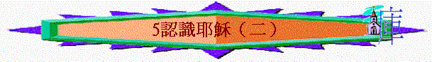

教師版
經文：「原來萬物在那與我們有關係的主眼前......」 來 4：13下
引言：
聖經告訴我們與主耶穌是有關係的，即與祂之間有密切的關係，若我們不明白這些關係，我們便難對祂有更深的信靠和對祂有愛的回應。例：我們所信任的人必是與我們有密切關係的人，而我們所愛的人必與我們有密切的關係及感情。
A)耶穌是我們的主（來 4：13下
）耶穌不單是我們的救主，祂救我們出黑暗，脫離死亡的捆鎖；祂更是我們一生的主，負責我們一生的事，但我們必須讓主耶穌來帶領我們，引導我們，因祂不會強逼我們交出主權。若我們不認識主耶穌昨是我們一生的主，我們便不能享受到祂的帶領和平安。有很多人說為何信了主仍是那樣的不快樂，因他們只要耶穌作救主，而不讓主耶穌在他們的生活上有主權，故不能享用 神的恩典。要知道 神不是給我們來利用，若如此便與其他宗教無異，即只是為了利益而信。要明白信主耶穌是人生的需要，因我們有罪，並且主耶穌要帶我們過真正有意義的生活。
例：正如人有了兒女，不以生下他們為滿足，還希望他們（兒女）的生活及人生過得準確，若兒女不讓父母作出帶領及指導，那麼他父母的心會如何呢？不是在他們年幼時是父母，在他長大後仍是他們的父母，仍是關心他們。主耶穌亦然，祂願意帶領我們的一生，只在乎我們是否願意！
B)耶穌是我們的生命的光（約 8：12）
要知道我們所處的世界是一個黑暗的世界。人的心是黑暗的，就算明明是不對的事，只因多人作就成為對的，如在人的背後說人的壞話。此外，明明是犯法的事，只因沒有被人捉拿，就成為沒有問題。這世界有太多不對的事，使我們的心不免落入迷惑中，走不準路，因人沒有光而看不清楚該走的路。光是重要的。
例：從前有一個人住在四川，那時交通不方便，常走石板路或是山上的羊腸小徑，如果是在白天或是天晴走路應沒有問題；但若在夜間，或在雨天，走這樣的路是非有光不可，有時甚致是一把香的火光也是寶貴的。有一次，有人就在這樣的一個黑夜走路，那時他是住在山頂，手裡沒有電筒，又沒有火把，連一把香的火也沒有，這時路上因天雨而滿了爛泥和小窪子，他又戴著一副不合度數的眼鏡，摸索前進，真是步步縷難，正在這時，忽然見後面遠處有人拿著燈火過來，他就讓這人先行，這樣便可以沾一點光，可是走不到多少步，那人轉入另一條小路上去，叫他只好「望火興歎」！不久，又有另一個人拿
著手電筒趕上了他，他拼命的緊追在那人的後面，希望趕快結束這段可怕而又縷
辛的行路，但是電筒不是在自己手中；所以行不到半里路，已被那人遠遠拋在後面了！這樣的沾了幾個人的光，直到深夜，方才回到家中，但已是滿身泥漿。我們若沒有光而在這世上走，要比這人更可怕，因世上沒有光，必須有主耶穌作我們的光才可以走，我們定要跟從主耶穌。
C)耶穌是我們的牧者（約 10：4、10）
主耶穌不單是我們的光，照亮我們當走的路，祂更是我們的牧者，引領我們走當走的路，聖經更告訴我們主耶穌是走在我們的前頭，我們面對的危險，主耶穌先面對，祂不會叫我們面對一些我們應付不來的事。聖經用羊來形容人，羊是很易迷路，又易趺倒，人亦是很易迷路及在難處中倒下的，故我們需要有牧者來幫助我們。聖經中用牧人與羊的比喻來表明主耶 穌與我們的關係之深，因好牧人必為羊的一切好處著想，甚致捨命也肯，主耶穌連性命也為我們捨去，祂豈不看顧我們嗎？祂正是好牧人！羊對於牧人的聲音是非常的熟悉，羊不肯跟 隨陌生人，因不熟悉他的聲音。
例：每一個牧羊人對自己的羊群可以一一的命名，只要叫出羊的名字，羊就會跟隨牧人，而且是不會錯的。主耶穌是非常的認識我們，我們對主的認識又有多少呢？
D)耶穌是我們的力量（腓 4：13、提後 4：17）
人生有時面對不能承擔的重擔，要知道主耶穌可以加力量給我們，並且祂更願意成為我們的力量，使我們可以去面對難處。主使喪氣的人重新有力去面對前路。
例：使徒保羅為主的緣故坐牢，但他卻沒有半點的不快樂，反倒勸勉別人要喜樂，他說這是因基督加給他力量。不單如此，基督更使我們有力去勝過罪惡。
例：有一名絕望的青年，倒在噴泉旁的草地上，眼望著泉水噴上，而又復落下，他就對自己說：「我一生像這水，我定意要作好，由罪中出來，可是不久又回去了。」他再往上看，見到天空的白雲，潔白如棉，他就想到：「那不過是地上的污水，被陽光照耀而吸了上天空。啊！有何力量可把我也吸上去呢？」其實基督就是我們的吸力，使我們可以脫離罪惡，只要我們肯信靠祂。
E)耶穌是我們的榜樣（腓 2：5、林前 11：1、太 11：29）
主耶穌是我們在世上生活的最好榜樣，祂一生靠天父而活，並一生遵行天父的旨意。若我們學主耶穌一樣的遵行天父的旨意，必會像主耶穌一樣的得到天父的喜悅及賜福。我們也要效法祂與人的關係，因無論任何年紀，任何性別，任何階層的人，主耶穌都可以與他們相處。 主不輕看他們又不為他們影響。祂說祂心裡柔和謙卑，我們需要學習主這種性情。若我們真效法主，我們的心靈必得著更大的喜樂，因謙卑的人不會與人爭競，自然就沒有氣憤或不平的生命了。
F)耶穌是我們的中保（來 7：22-25）
中保即是中間人，主耶穌是 神與人之間的橋樑，將 神的恩典帶下來，又將人的需要帶到 神前。祂是長遠活著並替我們祈求，好叫我們蒙保守不趺倒。要知我們有時信心軟弱，會被世界及其他事物所迷惑，而在信仰的路上偏離，但因有主耶穌的代求，使我們心中明白過來，又藉聖靈在我們心中題醒我們，使我們有回轉的心，好叫我們在信仰上長進起來。
G)耶穌是我們的盼望（腓 4：20-21、彼前 1：13）
聖經告訴我們主耶穌有一日會再來，並會將我們這些屬祂的人提到空中與祂相會。那主如何能將我們找出來呢？
例：正如鐵匠會用磁鐵吸取地上的鐵釘，而不用揀選出來，因鐵被磁鐵吸上來是自然的事。 我們有 神的生命，在主回來時，因主的呼喚，我們身體會改變了，然後被提到空中與主相會。當我們見主時，正是主要賞賜我們在世上為主作工(見證主)的時候，若我們真實的為主而活，主必不會忘記我們所作的工，祂是公義的，必要照我們所行的賞賜給我們。
例：使徒保羅他在快離世時，他宣稱他深知主顯淚時，他必得著 神的賞賜，他肯定他會得著公義的冠冕。
我們若是為主而活和照聖經而行，就必得著 神的賞賜，這些我們日後再談。
其實主與我們的關係還有很多方面可以談論，我們只選出幾樣來探討，最好我們可以自己從 聖經中去認識主耶穌。下次我們會探討靈修生活──即如何親近 神，與 神建立密切的關 係。
學生版
經文：「原來萬物，在那與我們有關係的主.......」 來 4：13下
A)耶穌是我們的主（來 4：13）
耶穌不單是我們的救主，更是我們一生的主。
B)耶穌是我們的生命之光
『耶穌又對眾人說：「我是世界的光，跟從我的，就不在黑暗�堥哄A必要得著生命的光。」』 約 8：12
光使我們可以走路，並使我們知道（看見）該走的路。
C)耶穌是我們的牧者
羊是很易迷路，又易趺倒，必須有牧人的看顧。
「既放出自己的羊來，就在前頭走，羊也跟著他，因為認得他的聲音。」
約 10：4
「我是好牧人，好牧人為羊捨命」 約 10：11
D)耶穌是我們的力量
「我靠著那加給我力量的，凡事都能作。」 腓 4：13
「惟有主站在我旁邊，加給我力量......」 提後 4：17上
是主耶穌親自成加給我們力量，祂並且成為我們的力量。
E)耶穌是我們的榜樣
「你們當以基督耶穌的心為心。」 腓 2：5
「你們該效法我，像我效法基督一樣。」 林前 11：1
「我心裡柔和謙卑，你們當負我的軛，學我的樣式，這樣，你們心裡就必得享
安息。」 太 11：29
F)耶穌是我們的中保
「既是起認立的，耶穌就作了更美之約的中保，......凡靠著祂進到 神面前的人，祂都能拯救到底，因祂是長遠活著，替他們祈求。」 來 7：22-25
G)耶穌是我們的盼望
「我們卻是天上的國民，並且等候救主，就是主耶穌基督，從天上降縷。祂要按著那能叫萬物歸服自己的大能，將我們這卑賤的身體改變形狀，和祂自己榮耀的身體相似。」 腓 3：20-21
「所以你們要約束你們的心，謹慎自守，專心盼望耶穌基督顯淚的時候所帶來給你們的恩。」 彼前 1：13